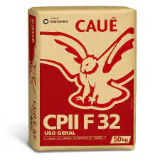
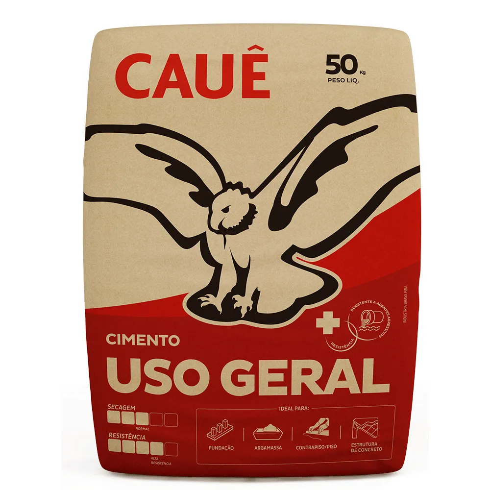
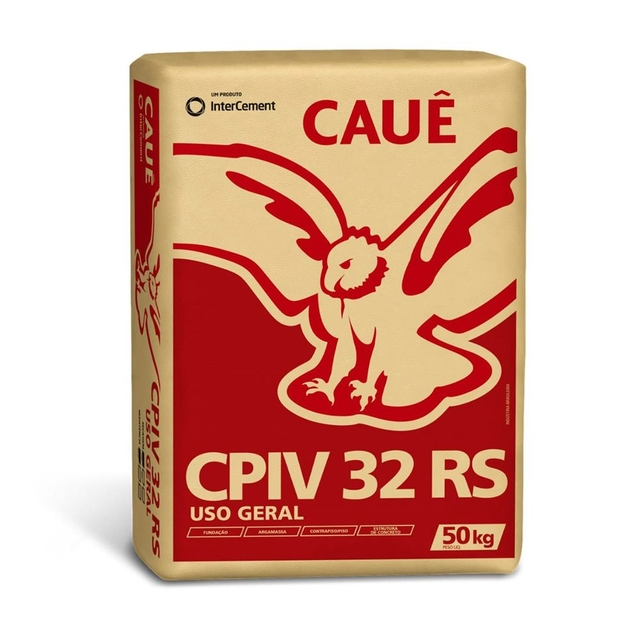

Existem, atualmente, no mercado, 5 tipos de cimento, chamados Cimento Portland n (CP n).
São eles:
Segue, abaixo, uma tabela comparativa de preços entre os tipos de cimento e seus valores no site da Leroy Merlin no dia 01/04/2023.
| Tipo de Cimento | Imagem | Resistência no 28° dia | Valor de mercado |
|---|---|---|---|
| CP I |  | <32 MPa | - |
| CP II | 32 MPa | R$ 31,90 | |
| CP III |  | >32 MPa | R$ 33,90* |
| CP IV |  | 40 MPa | R$ 32,90 |
| CP V | >50 MPa | R$ 36,00* |
*Tipos de cimento não encontrados em leroymerlin.com.
** O cimento CP I já não é mais comercializado, graças à seu baixo desempenho. em comparação à outros tipos disponíveis.